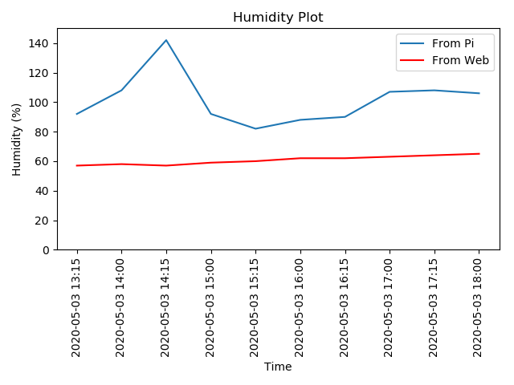

Programmed by Hai Tran on 16 April 2020
Project uses temperature and humidity recorded by DHT11 sensor via Raspberry Pi. This data is then compared with results from the website.
Data is recorded in Ascot Vale, VIC 3032, Australia
